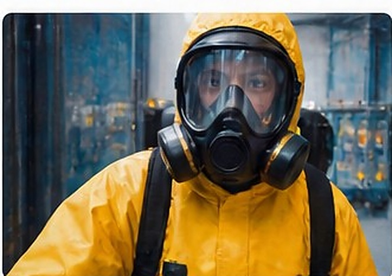
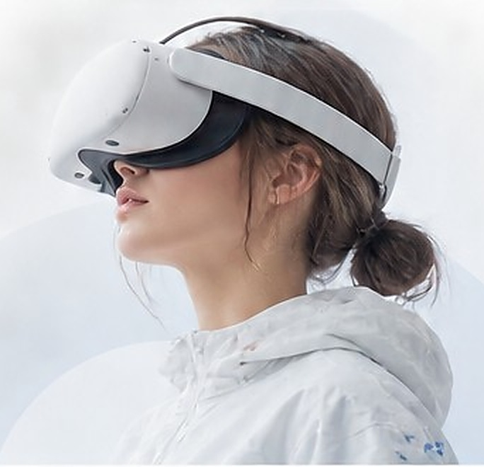
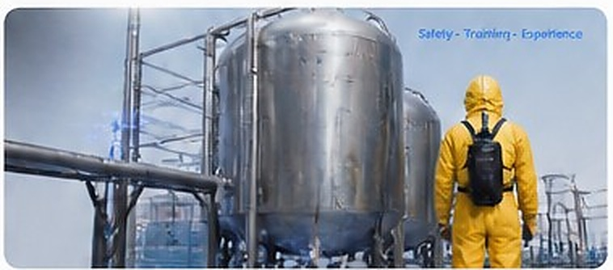

META HORIZON 입점 예정
화학물질 안전훈련 VR
작업계획서 확인, PPE 착용, 전원 차단, 환기, 가스 측정 등 작업 전 안전 절차를 실제 행동으로 학습하는 Meta Quest 기반 VR 콘텐츠입니다.
자세히 보기 →TYCHE IMMERSA · VR / XR
실제 현장에서 반복하기 어려운 경험을 VR 안에서 안전하게 배우고, 판단하고, 익힐 수 있도록 만듭니다.

WHAT WE DO
현재 Meta Horizon 입점을 준비 중인 TYCHE IMMERSA 프로젝트입니다.

작업계획서 확인, PPE 착용, 전원 차단, 환기, 가스 측정 등 작업 전 안전 절차를 실제 행동으로 학습하는 Meta Quest 기반 VR 콘텐츠입니다.
자세히 보기 →OUR VISION
TYCHE IMMERSA는 실제 환경을 그대로 복제하는 데서 끝나지 않고, 사용자가 판단하고 행동하며 기억하게 되는 몰입형 경험을 설계합니다.

몰입형 경험 설계
안전 기준과 절차 중심 설계
행동 기반 인터랙션
확장 가능한 콘텐츠 구조